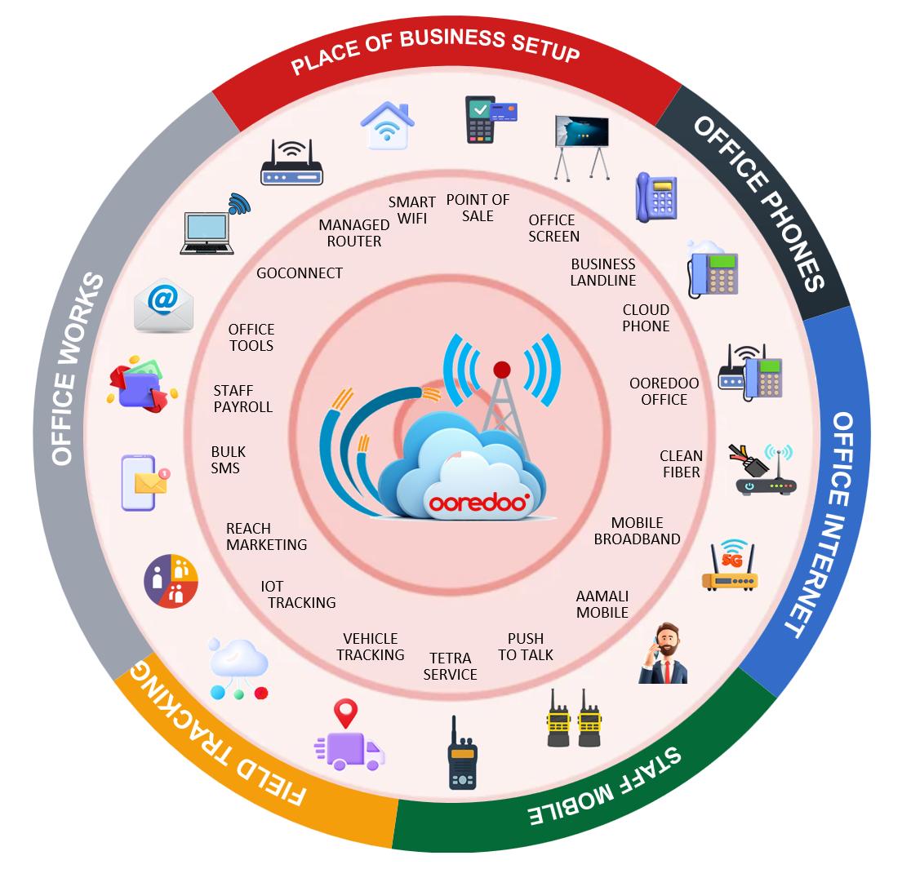
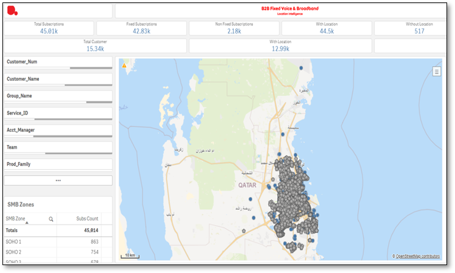
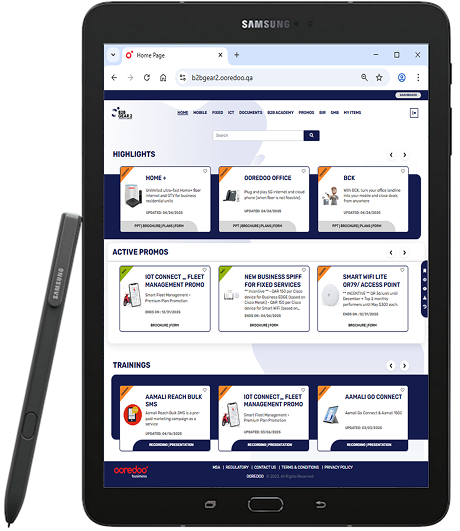
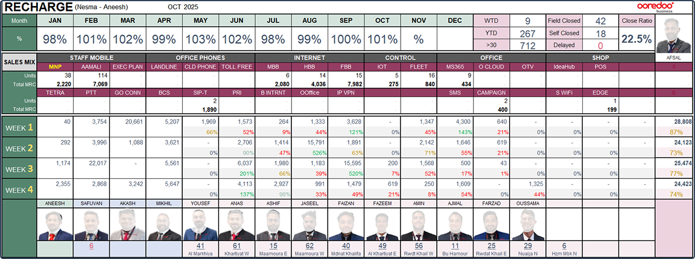

Team Empowerment
Ooredoo Qatar's sales force spans 100+ indirect channel partner sales agents, direct field reps, dedicated
account managers, and retail staff — each expected to sell an increasingly complex product portfolio in a
highly competitive, saturated market.
The sales team was growing in headcount but flat in performance. New reps took up to four months to become productive, top talent was indistinguishable from average performers until months into the role, and the team lacked the tools, content, and structure to perform consistently. I launched an initiative to build the capability, territory ownership, tooling, and executive visibility that a high-performing sales force requires — from the ground up.
SMB Portfolio Restructure — Needs-Based Architecture: Conducted a full
portfolio audit combining customer journey analysis, sales conversion data, and competitive
benchmarking to identify the real decision drivers for SMB buyers. Customers did not think in
technology categories — they thought in business outcomes. Redesigned the go-to-market
architecture around six customer-centric need areas, each with outcome-led messaging
validated through customer beta testing. The restructured taxonomy was adopted as the
standard across all channels — B2B App, marketing collateral, sales toolkits,
and digital self-service — creating a unified GTM message and directly enabling the self-service
product discovery experience.

Territory Design & Geographic Zoning: Designed and implemented a comprehensive
geographic zoning program, dividing the metropolitan area into 65 discrete sales zones,
each assigned to a dedicated agent with full ownership and accountability. Integrated
Esri ArcGIS with the CRM to calculate zone size, account density, and revenue
potential — enabling data-driven boundary decisions that ensured equitable workload distribution
while eliminating coverage gaps and agent overlap. Zones were configured end-to-end in the CRM and SFA
platform so all outbound calling lists and inbound leads were automatically routed to the responsible
agent. Field agents were equipped with a mobile app enabling real-time lead notification and CRM
updates — turning every field visit into a live data-collection event. Within three months,
confirmed market coverage improved from 62% to 89%, verified by independent customer
survey.

Full coverage of metropolitan area

GIS/CRM integrated zoning
Rugged Connected Field Tablets: Equipped every field sales representative with a
rugged, LTE-connected tablet pre-loaded with tools for CMS, mobile CRM/SFA, and the
digital order form with e-signature. Reps gained real-time access to collateral
— latest pricing, product specs, battlecards, and customer presentations — directly in the
customer meeting, with no dependence on laptops, printouts, or return trips to the office. Orders were
quoted, signed, and submitted on the spot, and the same device fed live customer, competitor, and
market intelligence back into the CRM. The tablet turned every field visit into a fully enabled sales
motion.

Performance Tracking & Executive Reporting: Engineered automated data pipelines
with CRM and Order Management developers, consolidating sales performance data by agent, zone, and
product alongside churn and number portability metrics. Built an ETL layer using SQL and Power Query,
then developed an interactive reporting suite in Excel and Power BI to surface trends and performance
stories clearly. Designed a weekly performance tracker consolidating KPIs across zones, agents, and
sales revenue into a single, visually consistent deck — eliminating manual report preparation and
establishing a single source of truth for strategic decision-making across the entire SMB commercial
operation.

Unified view into agents' weekly performance
Together, these five initiatives transformed the sales force from reactive and unstructured to capable,
territorially accountable, and data-driven. By building the Academy to accelerate rep capability,
restructuring the portfolio around customer needs, designing territory to eliminate coverage gaps,
centralizing content to ensure every rep sold from the same truth, and building the dashboards to give
leadership real-time visibility — the team achieved sustained 5% YoY growth in one of the most
competitive telecom markets in the region.
4→2
Months to Full Productivity
+15%
Avg Rep Performance Uplift
62→89%
Market Coverage in 3 Months
5% YoY
Revenue Growth, Saturated Market